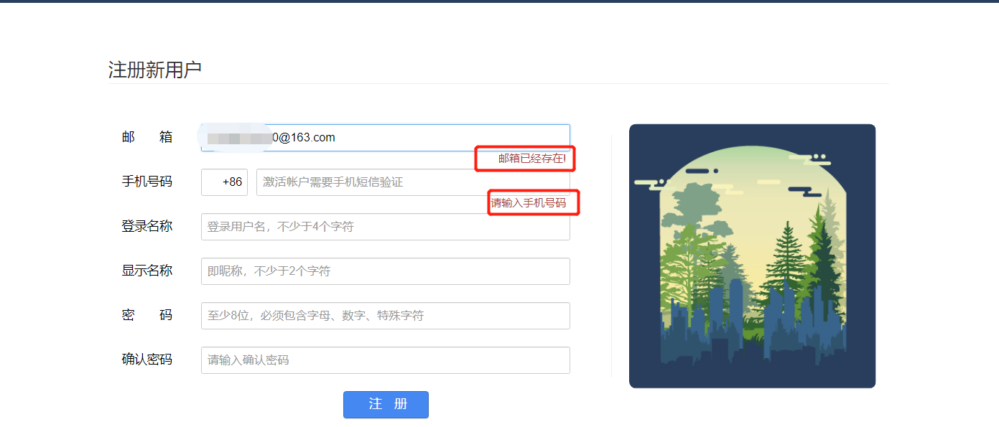

该从何说起呢？想写博客好久了，正好这个学期课很少(大三)，可以静下心来写点东西(虽然事情依旧很多)，总感觉记录和分享是一件很酷的事情。第一篇博客，第一次使用Markdown写博客，第一次使用IDEA，所以有什么错误的地方请指出。
关于AJAX = Asynchronous JavaScript and XML（异步的 JavaScript 和 XML）。AJAX 不是新的编程语言，而是一种使用现有标准的新方法。AJAX 是一种用于创建快速动态网页的技术。通过在后台与服务器进行少量数据交换，AJAX 可以使网页实现异步更新。这意味着可以在不重新加载整个网页的情况下，对网页的某部分进行更新。
详情请移步w3c AJAX。
在学习ajax的原理之后，有三个简单的例子：
实时验证用户名是否存在，多用于注册的时提醒用户更换用户名，即有效性验证。
如cnblog注册时当输入信息后，失去焦点实时判断信息是否可用。

首先模拟一个后台servlet
package test.servlet;
import net.sf.json.JSONObject;
import test.utils.DBUtil;
import javax.servlet.ServletException;
import javax.servlet.annotation.WebServlet;
import javax.servlet.http.HttpServlet;
import javax.servlet.http.HttpServletRequest;
import javax.servlet.http.HttpServletResponse;
import java.io.IOException;
import java.sql.*;
@WebServlet(name = "AjaxServlet",urlPatterns = "/AjaxServlet")
public class AjaxServlet extends HttpServlet {
protected void doPost(HttpServletRequest request, HttpServletResponse response) throws ServletException, IOException {
}
protected void doGet(HttpServletRequest request, HttpServletResponse response) throws ServletException, IOException {
Connection con;
String exist = "true";
try {
con = DBUtil.getInstance().getConnection();
String sql = "select count(*) from stu where name = ?";
PreparedStatement pStatement = con.prepareStatement(sql);
pStatement.setString(1, request.getParameter("username"));
ResultSet resultSet = pStatement.executeQuery();
while (resultSet.next()) {
if (resultSet.getInt(1)==0) {
exist = "false";
}
}
JSONObject jsonObject = new JSONObject();
jsonObject.put("exist", exist);
response.getWriter().write(jsonObject.toString());
System.out.println(jsonObject.toString());
} catch (SQLException e) {
// TODO Auto-generated catch block
e.printStackTrace();
}
}
}这段代码的逻辑简单：接受doget请求得到参数username，从数据库里查询用户名是否存在，最后将结果转化成json数据响应到前台。
之前一直使用Eclipse，第一次使用IDEA，很不熟悉，其中新建servlet ，IDEA是这样的注解
@WebServlet(name = "AjaxServlet"),而Eclipse是@WebServlet("/AjaxServlet"),在IDEA中用默认的注解会有404问题,必须使用这样的注解@WebServlet(name = "AjaxServlet",urlPatterns = "/AjaxServlet")或者@WebServlet("/AjaxServlet"),或者配置web.xml文件。
接下来就是前台页面了
<body>
USERNAME<input type="text" id="username" name="username" onblur="exist('username')"/><span id="it"></span><br>
PASSWORD<input type="password" id="pwd" name="pwd"><br>
<input type="submit" value="提交" />
<script type="text/javascript">
var xhr = new XMLHttpRequest();
function ajax(url,id){
var input = document.getElementById(id);
var span = document.getElementById("it");
var value = input.value;
xhr.open("GET",url+"?username="+value,true);
xhr.onreadystatechange = function(){
if (xhr.readyState == 4 && xhr.status == 200){
var temp = xhr.responseText;
var data = eval("("+temp+")");
if (data.exist=="true"){
span.innerText = "该用户已存在！";
}else{
span.innerText = "命名正确！！";
}
}
};
xhr.send(null);
};
function exist(id){
var input = document.getElementById(id);
var value = input.value;
if(value){
ajax("AjaxServlet",id);
}else{
var span = document.getElementById("it");
span.innerText = "输入为空，请输入内容！！";
}
}
</script>
</body>写的比较初级，刚学javaScript没多久，原谅我的菜^_^，简单来说这段代码就是DOM找元素绑定到onblur(失去焦点事件)，当触发事件在判断是否有值，如果有值的话，ajax发送请求，发送成功，服务器响应，返回数据，接着利用eval("("+temp+")")处理成json字符串，进行解析并判断。
省市区三级联动多用于填写地址，为防止用户输入信息有效，采取下拉框选项供用户选择。
例如淘宝网的地址填写。
数据库设计
这样设计的好处是便于维护，如果增加第四级，直接插入数据表明super_id就可以了，不用继续增加表，从而降低耦合性。
后台servlet代码
package test.servlet;
import net.sf.json.JSONArray;
import net.sf.json.JSONObject;
import test.pojo.Postion;
import test.untils.DBUtil;
import javax.servlet.ServletException;
import javax.servlet.annotation.WebServlet;
import javax.servlet.http.HttpServlet;
import javax.servlet.http.HttpServletRequest;
import javax.servlet.http.HttpServletResponse;
import java.io.IOException;
import java.sql.*;
import java.util.ArrayList;
import java.util.List;
@WebServlet(name = "AjaxServlet",urlPatterns = "/AjaxServlet")
public class AjaxServlet extends HttpServlet {
protected void doPost(HttpServletRequest request, HttpServletResponse response) throws ServletException, IOException {
}
protected void doGet(HttpServletRequest request, HttpServletResponse response) throws ServletException, IOException {
Connection con ;
String sql ="select * from postion where super_id=?";
List<Postion> list = new ArrayList<>();
int super_id = Integer.parseInt(request.getParameter("super_id"));
try {
con = DBUtil.getInstance().getConnection();
PreparedStatement pst = con.prepareStatement(sql);
pst.setInt(1,super_id);
ResultSet resultSet = pst.executeQuery();
while(resultSet.next()){
Postion postion = new Postion();
postion.setId(resultSet.getInt(1));
postion.setName(resultSet.getString(2));
postion.setSuper_id(resultSet.getInt(3));
list.add(postion);
}
JSONArray json = JSONArray.fromObject(list);
JSONObject jsonObject = new JSONObject();
jsonObject.put("potions",json);
System.out.println(jsonObject.toString());
response.getWriter().write(jsonObject.toString());
} catch ( SQLException e) {
e.printStackTrace();
}
}
}这段代码也写的比较简单，主要的逻辑是接受doget请求得到参数super_id，从数据库里查询super_id匹配的词条，放入List中最后将结果转化成json数据响应到前台。
下面是前台代码
<body>
省<select id = "province" ></select>
市<select id = "city"></select>
区<select id = "region"></select>
<script type="text/javascript">
var xhr = new XMLHttpRequest();
var province = document.getElementById("province");
var city = document.getElementById("city");
function ajax(level,super_id) {
var type = document.getElementById(level);
xhr.open("GET","AjaxServlet?super_id="+super_id,true);
xhr.onreadystatechange = function (ev) {
if (xhr.readyState == 4 && xhr.status ==200){
var temp = xhr.responseText;
var data = JSON.parse(temp);
var innerhtml = "";
for (i in data.potions){
innerhtml+="<option value=";
innerhtml+=data.potions[i].id;
innerhtml+=">";
innerhtml+=data.potions[i].name;
innerhtml+="</option>";
}
type.innerHTML = innerhtml;
}
}
xhr.send(null);
}
(function () {
ajax("province",0);
}());
province.onchange = function () {
var index = province.selectedIndex;
ajax("city",province[index].value);
};
city.onchange = function () {
var index = city.selectedIndex;
ajax("region",city[index].value);
}
</script>
</body>首先省级的super_id=0,当html加载的时候首先把省级的元素填充满，之后通过onchange事件绑定得到选中的option的value。之后发送请求，返回数据，转化解析json。
无刷新添加是ajax应用的典型代表，原始添加数据，首先发送显示所有数据的请求，请求应答之后，返回数据，显示在页面上，而添加请求之后要重新加载页面重新发送显示所有页面的请求，这时候就要刷新了。而利用ajax的方法，很容易的解决这个问题。
下面贴出servlet代码
package test.servlet;
import net.sf.json.JSONArray;
import net.sf.json.JSONObject;
import test.pojo.Topic;
import test.untils.DBUtil;
import javax.servlet.ServletException;
import javax.servlet.annotation.WebServlet;
import javax.servlet.http.HttpServlet;
import javax.servlet.http.HttpServletRequest;
import javax.servlet.http.HttpServletResponse;
import java.io.IOException;
import java.sql.Connection;
import java.sql.PreparedStatement;
import java.sql.ResultSet;
import java.sql.SQLException;
import java.util.ArrayList;
import java.util.List;
@WebServlet(name = "ShowAllServlet",urlPatterns = "/ShowAllServlet")
public class ShowAllServlet extends HttpServlet {
public ShowAllServlet() {
super();
// TODO Auto-generated constructor stub
}
protected void doGet(HttpServletRequest request, HttpServletResponse response) throws ServletException, IOException {
Connection con = DBUtil.getInstance().getConnection();
List<Topic> list = new ArrayList<>();
try {
PreparedStatement pst =con.prepareStatement("select * from topic");
ResultSet resultSet = pst.executeQuery();
while (resultSet.next()){
Topic topic = new Topic();
topic.setId(resultSet.getInt(1));
topic.setContent(resultSet.getString(2));
list.add(topic);
}
JSONArray jsonArray = JSONArray.fromObject(list);
JSONObject jsonObject = new JSONObject();
jsonObject.put("topics",jsonArray);
response.setContentType("application/html;charset=utf-8");
response.getWriter().write(jsonObject.toString());
System.out.println(jsonObject.toString());
} catch (SQLException e) {
// TODO Auto-generated catch block
e.printStackTrace();
}
}
protected void doPost(HttpServletRequest request, HttpServletResponse response) throws ServletException, IOException {
// TODO Auto-generated method stub
doGet(request, response);
}
}
这个是显示所有内容的servlet，这个很简单就不多说了。
package test.servlet;
import net.sf.json.JSONArray;
import net.sf.json.JSONObject;
import test.pojo.Topic;
import test.untils.DBUtil;
import javax.servlet.ServletException;
import javax.servlet.annotation.WebServlet;
import javax.servlet.http.HttpServlet;
import javax.servlet.http.HttpServletRequest;
import javax.servlet.http.HttpServletResponse;
import java.io.IOException;
import java.sql.Connection;
import java.sql.PreparedStatement;
import java.sql.ResultSet;
import java.sql.SQLException;
import java.util.ArrayList;
import java.util.List;
@WebServlet(name = "AddAction",urlPatterns = "/AddAction")
public class AddAction extends HttpServlet {
protected void doPost(HttpServletRequest request, HttpServletResponse response) throws ServletException, IOException {
Connection con = DBUtil.getInstance().getConnection();
try {
PreparedStatement pst =con.prepareStatement("insert topic values(null,?)");
pst.setString(1,request.getParameter("content"));
pst.execute();
JSONObject jsonObject = new JSONObject();
jsonObject.put("status",1);
response.setContentType("application/html;charset=utf-8");
response.getWriter().write(jsonObject.toString());
} catch (SQLException e) {
// TODO Auto-generated catch block
e.printStackTrace();
}
}
protected void doGet(HttpServletRequest request, HttpServletResponse response) throws ServletException, IOException {
}
}AddActio从数据库中插入数据，如果插入成功，status=1,响应到前台进行判断。
下面是前台代码
<body>
<div id = "content">
</div>
请输入内容<textarea id="input">
</textarea>
<button id="bt">添加</button>
<script type="text/JavaScript">
var xhr = new XMLHttpRequest();
var area = document.getElementById("input");
var bt = document.getElementById("bt");
bt.onclick = function () {
var text = document.getElementById("content");
xhr.open("POST","AddAction?content="+area.value,true);
var innerHtml = text.innerHTML;
xhr.onreadystatechange = function() {
if (xhr.readyState == 4 && xhr.status == 200) {
var temp = xhr.responseText;
var result = eval("("+temp+")");
if (result.status==1){
innerHtml+=area.value;
}
innerHtml+="<hr>";
text.innerHTML = innerHtml;
}
}
xhr.send(null);
};
function ajax() {
var text = document.getElementById("content");
xhr.open("GET","ShowAllServlet",true);
var innerHtml ="";
xhr.onreadystatechange = function() {
if (xhr.readyState == 4 && xhr.status == 200) {
var temp = xhr.responseText;
var result = eval("("+temp+")");
for(i in result.topics){
innerHtml+=result.topics[i].content;
innerHtml+="<hr/>";
}
text.innerHTML = innerHtml;
}
}
xhr.send(null);
}
(function () {
ajax();
}());
</script>
</body>首先请求显示所有内容，收到应答的数据，将数据放到块中，添加数据后单击按钮，触发onclick事件，发送请求，返回status值，判断是否添加成功，如果添加成功直接放到块中，从而避免刷新(重新发送显示所有内容的请求)。
第一次用IDEA，从Eclipse到IDEA真的不熟悉，项目模块的概念不一样，导入jar包的方式让我费解，Artifacts的打包方式，一脸懵逼，这些都不是关键问题，关键的是我电脑打开IDEA需要1分多钟，真的快o(╥﹏╥)o了，打开eclipse间接性抽搐，哎，欲哭无泪，省了几顿饭钱，忍痛从8g内存换到12g内存，没什么多大用。好恨，当初骗我买学习本的那个家伙！！！！
推荐一个关于IDEA的学习教程，写的很棒，这是地址
之前准备用sublime Text3的插件写博客，sublime Text3的插件下载如果不能科学上网就很难受，网贼慢，我自己捣鼓半天发现有点问题，之后就改用vscode写markdown的文件，这篇博客就是利用vscode 的插件Markdown Preview Enhanced所完成的，怎么说呢？用markdown写文档很酷(^▽^)。
一直都想写博客，以为就是写点文字贴点儿图片代码，第一次写，写到这里真的很费神，首先语言组织，然后大致的格式，最重要的是技术的理解，是，写是这么写，但为什么这么写，你对这个技术的理解是否到位，是否会把别人带到坑里，这些都要考虑，这篇博客就图个乐呵，真的写的很差劲，对技术的理解也可能没有到位，语言组织能力也比较差，不过这是一个过程，我会不断的成长，提成各项的能力。加油，努力。